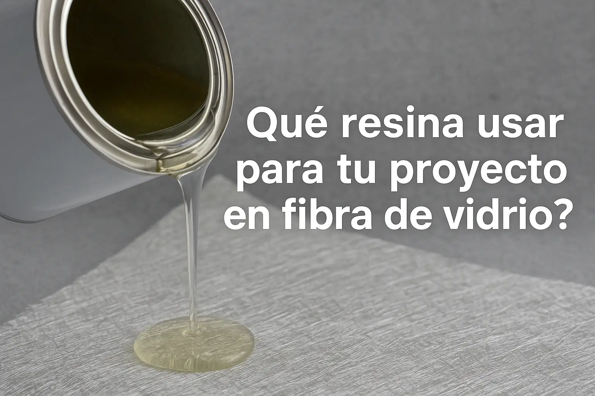

¿Qué resina usar para tu embarcación o proyecto en fibra de vidrio?
Publicado por CONAVRE | Abril 2025
Elegir la resina adecuada para una embarcación o estructura de fibra de vidrio es clave para garantizar resistencia, durabilidad y seguridad. En este artículo explicamos los tipos más comunes: resina poliéster, epóxica y viniléster, sus usos, ventajas y limitaciones.
¿Para qué sirve la resina en embarcaciones?
La resina actúa como matriz que envuelve y endurece la fibra de vidrio, generando una estructura compuesta. Su elección afecta la flexibilidad, resistencia química y compatibilidad con otros materiales.
Tipos de resina más utilizados en astilleros
- Resina poliéster: la más usada por su bajo costo, buena rigidez y rapidez de curado. Ideal para proyectos de volumen. Menor adherencia que la epóxica.
- Resina epóxica: gran adhesión, resistencia al agua y a la tracción. Perfecta para reparaciones estructurales y embarcaciones de alto rendimiento. Mayor costo y tiempo de curado.
- Resina viniléster: combina lo mejor de ambas: alta resistencia mecánica y química. Uso especializado en ambientes agresivos o industriales.
Tabla comparativa rápida
- Poliéster: Económica, rápido curado, baja adherencia.
- Epóxica: Alta adherencia, impermeable, costosa.
- Viniléster: Alta resistencia química, precio medio-alto.
¿Qué usamos en CONAVRE?
En nuestro astillero en Quintero, aplicamos principalmente resinas poliéster y viniléster, según el tipo de embarcación o reparación. Para refuerzos estructurales o reparaciones en zonas húmedas, utilizamos epóxicas.
Recomendaciones según tu necesidad
- Embarcaciones de pesca artesanal: poliéster.
- Zonas de contacto permanente con agua: epóxica.
- Ambientes con químicos o calor: viniléster.
En CONAVRE no solo aplicamos estos materiales, sino que asesoramos en base a normas técnicas y experiencia real en la Quinta Región y todo Chile.
Volver al Blog